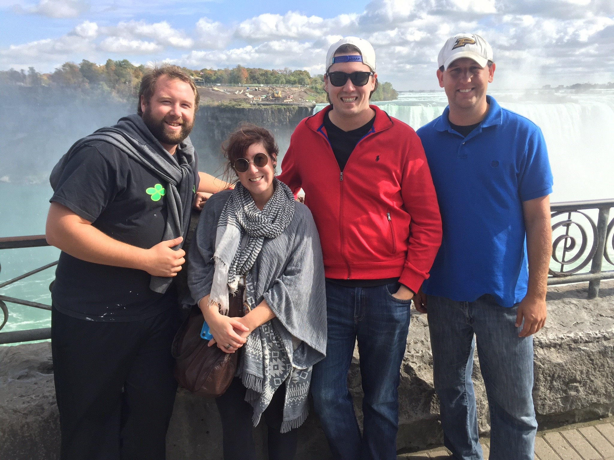

Hello!
My name is Kyle Gray. Originally from Atlanta, GA, I attended Purdue University -- Boiler Up! -- and love to travel. From Hong Kong to Bermuda, Turks & Caicos to Italy, England to Hawaii, I love to explore new places. In fact, I made my way to Colorado by way of a 45-day road trip across the US! I've always been intrigued by the complexity -- and simplicity -- of computer science, and look forward to helping customers with their web development needs.
In addition to traveling, other hobbies include: scuba diving (see photo above), camping around northern Colorado, cooking, sports, movies and playing strategy board games. (Settlers of Catan, Risk and Sheriff of Nottingham are my current favorites). I enjoy video games (Rimworld, Civilization, League of Legends) on occasion as well. Hidden talent: drumming. (I played on the drum line in my high school marching band,)